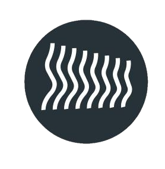

Bio
Detail-oriented, self-motivated, and organized professional with a Master of Science in Computer Science, specializing in research, design, and implementation of machine learning models. Proven expertise in scientific publications, algorithm development, and the end-to-end process of training and deploying machine learning models. Adept at developing APIs and skilled in both front-end and back-end development. Passionate about AI methods and eager to contribute to projects as a versatile professional.
kundanthota@gmail.com
Machine Learning
Years of Experience: 5 years
Usage Context: Throughout various roles including Data Scientist, Machine Learning Engineer, and Researcher.
Impact: Developed numerous ML models for optimizing industrial processes, fine-tuning YOLOv5 for accident detection, and creating recommendation engines that enhanced product returns cost efficiency. Improved operational efficiency, road safety, and user engagement through advanced ML techniques.
Deep Learning
Years of Experience: 5 years
Usage Context: Implemented deep learning models during my tenure at companies like Shapematchr GmbH and Fraunhofer IOSB, as well as in academic research projects.
Impact: Enhanced model accuracy for 3D body shape estimation, improved personalized product recommendations, and streamlined ML model training processes, leading to higher efficiency and accuracy in various applications.
Graph Neural Networks
Years of Experience: 2 years
Usage Context: Applied in research projects such as Human Cloth Generation for different pose sequences.
Impact: Enabled the generation of realistic human clothes in various poses, improving the accuracy and visual appeal of virtual try-on applications and advancing the field of 3D human pose estimation.
Computer Vision
Years of Experience: 4 years
Usage Context: Implemented in projects for real-time accident detection, 3D body shape estimation, and virtual try-on applications.
Impact: Improved road safety, user engagement, and the accuracy of AI models in understanding and interpreting visual data, leading to innovative solutions in various domains.
Natural Language Processing (NLP)
Years of Experience: 4 years
Usage Context: Applied in projects like Improving Pairs Trading with News Sentiment.
Impact: Enabled the extraction of valuable insights from textual data, improving trading strategies and decision-making processes by incorporating sentiment analysis and enhancing the prediction accuracy of financial models.
Time Series Analysis
Years of Experience: 3 years
Usage Context: Applied in financial projects like stock data analysis and pairs trading strategies.
Impact: Enhanced the prediction and analysis of financial markets, resulting in more effective trading strategies and better investment decisions.
Demand Forecasting
Years of Experience: 1 years
Usage Context: Applied in Supply Chain demand forecast
Impact: Reduced inventory and costs by 25% and produced forecasts for around 6000 articles with a global model that captures internal patters.
Image Processing, Image Analysis, Image Segmentation
Years of Experience: 4 years
Usage Context: Key component in projects at Shapematchr GmbH, DFKI Kaiserslautern, and Fraunhofer IOSB.
Impact: Enhanced the accuracy of 3D body shape estimation and virtual try-on applications, improving user experience and the effectiveness of AI-driven solutions in image-related tasks.
Python
Years of Experience: 5 years
Usage Context: Fundamental language for implementing various machine learning algorithms, data analysis, scripting tasks, and automation.
Impact: Contributed to the development of robust and scalable solutions across different domains, supporting data-driven decision-making processes and enhancing operational efficiencies.
Numpy / Pandas
Years of Experience: 5 years
Usage Context: Extensively used in data manipulation and analysis in every project, including stock data retrieval and analysis at Sociovestix Labs.
Impact: Enabled efficient data handling and transformation, significantly improving the speed and quality of data analysis tasks and supporting the development of accurate predictive models.
Scikit-Learn
Years of Experience: 5 years
Usage Context: Used for building and evaluating machine learning models at Fraunhofer IOSB and in academic research.
Impact: Enhanced model performance and operational efficiency through the development of optimization models and real-time training applications, resulting in better decision-making processes and improved operational metrics.
PyTorch
Years of Experience: 4 years
Usage Context: Core framework used in almost all projects, including fine-tuning YOLOv5, developing recommendation engines, and research publications.
Impact: Facilitated the development of high-performance machine learning models, leading to significant advancements in real-time accident detection, personalized recommendations, and academic contributions to the AI community.
Web Development (HTML/CSS/JS/Vue.js)
Years of Experience: 3 years
Usage Context: Developed user-friendly web interfaces and portals for data visualization and interaction with ML models at various companies.
Impact: Enhanced user engagement and productivity by creating intuitive web applications.
PostgreSQL
Years of Experience: 3 years
Usage Context: Used for storing and managing large datasets in backend systems.
Impact: Facilitated scalable data storage solutions and efficient data retrieval processes, contributing to the development of robust backend systems.
Git - Version Control
Years of Experience: 5 years
Usage Context: Essential for version control and collaborative development across all software projects.
Impact: Improved team collaboration, code management, and project organization, ensuring version control and code stability throughout development cycles.
FastAPI
Years of Experience: 3 years
Usage Context: Used for developing fast and efficient APIs for web applications and microservices.
Impact: Enabled rapid development of backend services with high performance and scalability, improving the responsiveness and efficiency of web applications.
Docker
Years of Experience: 4 years
Usage Context: Implemented Docker for containerizing applications and simplifying deployment processes.
Impact: Streamlined application deployment, improved consistency across development and production environments, and facilitated efficient scaling of services.
Graphics
Years of Experience: 2 years
Usage Context: Utilized Blender for creating and manipulating 3D models and animations in research and industry projects.
Impact: Enhanced visual representations and simulations, contributing to the development of realistic virtual environments and improving visualization capabilities.
3D Data Synthesis
Years of Experience: 2 years
Usage Context: Applied in research and industry projects for generating synthetic 3D human data and manipulating poses to augment training datasets for machine learning models.
Impact: Enhanced the realism and diversity of training data, improving the generalization and performance of AI models in tasks related to human pose estimation, virtual try-on applications, and more.
Redis
Years of Experience: 2 years
Usage Context: Used Redis for caching and improving performance in web applications and data-intensive projects.
Impact: Improved data access speeds, reduced database load, and enhanced overall application performance through efficient caching and data management strategies.
-

AI Researcher
IAI, KIT
March 2025 -- Current-
+ Contributing to the NEED project in Germany, focusing on AI-driven solutions for energy transition and efficient energy management.
-
+ Conducting research on AI optimization models to enhance grid stability and energy consumption forecasting.
-
+ Exploring opportunities to pursue a Ph.D. in energy-aware machine learning systems.
-
-
Contributor
Crateflow
August 2024 -- Current-
+ Designing and implementing a demand forecasting ML backend for supply chain management, improving forecasting accuracy.
-
+ Developing AI agents for automated inventory management, optimizing safety stock calculations and reducing waste
-
+ Integrated MLflow into the ML backend architecture for model tracking and performance monitoring.
-
-
Data Scientist
Tramo Service
August 2023 -- February 2025-
+ Built and maintained a user-friendly web interface for real-time traffic monitoring and analysis.
-
+ Developed backend systems to control LED speed screens and adjust speed limits based on traffic conditions.
-
+ Created tools for clear and effective visualization of traffic data using Python, and data visualization libraries.
-
+ Implemented document management automation tools for automatic text extraction, analysis, and classification using OCR and document analysis techniques.
-
+ Fine-tuned YOLOv5 model on custom datasets for accurate road accident detection and integrated it into the camera system for real-time safety enhancement.
-
-

Machine Learning Engineer
Shapematchr GmbH
June 2022 -- June 2023-
+ Designed and developed an ML system to generate 3D human avatars from radar data.
-
+ Built an ML system to extract low-dimensional features from product images for related product recommendations.
-
+ Created synthetic datasets using Blender to train ML algorithms for cloth simulation.
-
+ Developed internal services using Python and FastAPI in a microservices architecture.
-
-
Guest Researcher
DFKI Kaiserslautern
June 2022 -- June 2023-
+ Published research papers for advanced 3D body shape estimation and virtual try-on networks.
-
+ Applied computer vision techniques including image processing and deep learning for scientific research.
-
-
Researcher
Fraunhofer IOSB
August 2021 -- June 2022-
+ Implemented ML-based optimization models on industrial data to enhance operational efficiency and decision-making processes.
-
+ Developed a web application for real-time training and monitoring of ML models, enabling seamless interaction and adjustments during the training process.
-
-
Software Developer
Sociovestix Labs
April 2020 -- June 2021-
+ Developed a dashboard with Python Dash to continuously train, apply, and monitor neural network models on financial time series data.
-
+ Visualized real-time performance metrics of the neural network models, providing insights into financial trends and model behavior.
-
+ Automated data scraping and preprocessing from social media platforms using Docker and Selenium for continuous integration of sentiment data.
-
Disease Information Retrieval-Augmented Q&A System
Developed a Q&A system to provide precise information about diseases by integrating a retrieval mechanism with large language models (LLMs). The system accesses a database of medical documents to retrieve relevant context and generate concise answers based on user queries.
Key Achievements:
- Q&A System for Disease Information: Created a retrieval-based Q&A system that provides accurate disease-related information using medical documents.
- Document Retrieval Optimization: Applied DocArrayInMemorySearch and RecursiveCharacterTextSplitter to efficiently retrieve disease-specific information from large documents.
- LLM Integration: Used Ollama’s Llama3 model to generate answers based on the context provided by the retrieved documents.
Challenges and Solutions:
- Hallucination Control: Minimized incorrect model responses by refining prompts and ensuring retrieval of the most relevant content.
- Document Management: Enhanced document splitting to retain critical information while ensuring efficient retrieval.
Technical Stack:
- FastAPI: API development and user interaction management.
- LangChain & Ollama: For managing document retrieval and response generation.
- GPT4AllEmbeddings: For creating document embeddings and improving retrieval accuracy.
Human Cloth Generation for different pose sequences
The goal of this project was to develop a system that generates realistic human clothes for different poses using advanced machine learning techniques. This involves creating a model that can understand and predict how clothes will look and behave when a person moves into various positions.
Key Achievements:
-
Mesh GAN Implementation:
- Developed a Generative Adversarial Network (GAN) with a unique mesh patch-wise discriminator.
- This network is designed to create high-quality, realistic human clothes for different poses, ensuring that the generated garments look natural and plausible.
-
Graph Convolution CVAE-GAN Training:
- Trained a Graph Convolution Conditional Variational Autoencoder GAN (CVAE-GAN).
- This model learns the displacement and deformation of clothes when a person transitions between different poses.
- Utilized graph neural networks to effectively model the complex relationships and interactions within the cloth meshes.
Technical Stack:
- Python: Primary programming language used for the implementation.
- PyTorch: Deep learning framework used for building and training the GAN and CVAE-GAN models.
- Graph Neural Networks: Employed to handle the mesh data and model the structure of the clothes.
- GANs (Generative Adversarial Networks): Used for generating realistic clothing images.
- Variational Autoencoder (VAE): Helps in learning the latent representations of the clothes' displacement.
Estimation Of 3D avatar And Clothing Measurements
The aim of the project is to develop a simple and efficient system for estimating 3D avatar and clothing measurements from front- and side-view images, suitable for integration into mobile applications.
Key Achievements:
-
Proposed Architecture:
- Proposed a simple yet effective architecture to estimate shape and measures from the front- and side-view images.
- Designed an auto-encoder network to learn low-dimensional features from segmented human silhouettes.
- Adopted a kernel-based regularized regression module to estimate the body shape and measurements from the features extracted using the trained encoder.
-
Model Capabilities:
- The model can estimate 3D shape and clothing measures with a model size of 25 MB, which is easy to embed into mobile apps.
Technical Stack:
- Implementation: Implemented in Python.
- Technology: Utilized auto-encoder networks and kernel-based regression.
- Application: Designed for mobile app integration.
Pairs Trading Strategy with News Sentiment Analysis
This project aimed to enhance the traditional pairs trading strategy by incorporating news sentiment analysis. The objective was to use sentiment data from news articles to predict and leverage correlation discrepancies between pairs of stocks, thus improving trading decisions and outcomes.
Key Achievements:
-
Correlation Analysis:
- Conducted correlation tests to identify pairs of stocks with high historical correlation.
- This step is crucial for selecting suitable pairs for trading based on their price movements' interdependence.
-
News Sentiment Analysis:
- Analyzed news sentiment using sources like News-API and GDELT to gauge the market's perception of the companies.
- Developed methods to measure the popularity and sentiment around the stocks, predicting potential changes in their correlation.
-
Trading Strategy Development:
- Created trading signals based on the sentiment and popularity data.
- Developed and back-tested trading strategies using these signals, evaluating their performance on historical market data.
- Implemented holding periods and threshold values to refine the trading strategy and maximize returns.
Technical Stack:
- Python: Used for scripting and analysis.
- Sentiment Analysis: Used NLP to extract and quantify the sentiment expressed in news articles.
- Web Scraping: Employed to collect data from various news sources.
- Back Testing: Implemented to simulate the trading strategy on historical data and evaluate its performance.